Piso SPC 100% resistente al agua, con base acústica incluida y sistema click. Te lo vendemos solo material o con instalación profesional en el sur de Florida.
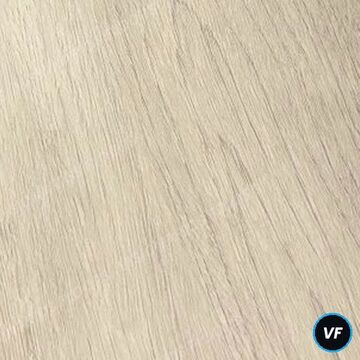
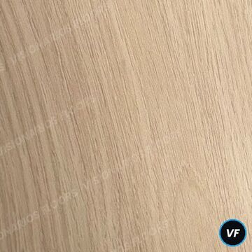
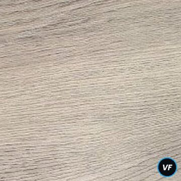
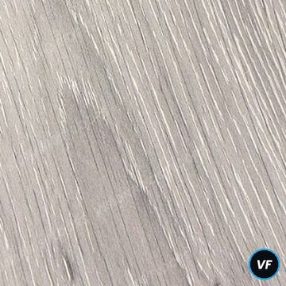
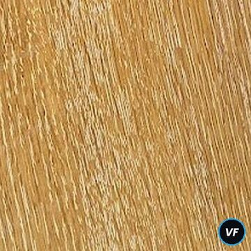
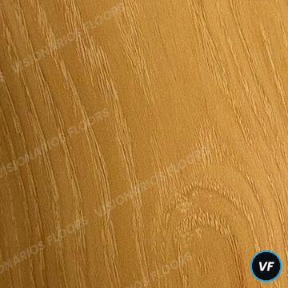
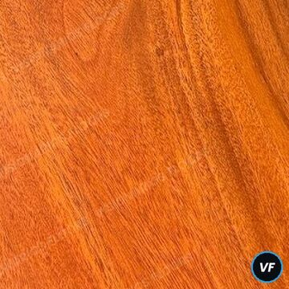
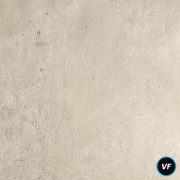
El SPC (Stone Plastic Composite) tiene un núcleo rígido de piedra y polímero. No se hincha con el agua, no se deforma con la humedad de Florida y se instala en muy poco tiempo.
Apto para cocinas, baños y lavaderos.
Instalación flotante, rápida y limpia, sobre la mayoría de los pisos existentes.
Manta acústica adherida: pisada más suave y silenciosa.
Protección contra rayas y tránsito diario.
Estable ante cambios de temperatura.
Casas, apartamentos, rentas, oficinas y locales.
| Medida de tabla | 48" × 7¼" · 2.41 ft² por tabla |
| Grosor total | ≈ ¼": desgaste 20 mil + núcleo SPC 5/32" + base IXPE 1/16" |
| Instalación | Flotante, sistema click, sin pegamento |
| Acabado | Top coat con tratamiento UV |
| Empaque | 10 tablas por caja · 24.16 ft² · 43 lb |
| Uso | Residencial y comercial liviano |
Precios en USD, sujetos a disponibilidad. La cotización final depende de medidas y estado del contrapiso. Demolición, nivelación, baseboards y escaleras se cotizan aparte.
Fotos reales de nuestro muestrario. Anotá el código del color que te guste (por ejemplo VF-N04) y mandanoslo por WhatsApp. Te llevamos la muestra física sin costo.
Blancos, cremas y robles muy claros. Amplían visualmente cualquier ambiente.
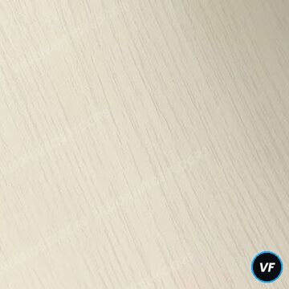
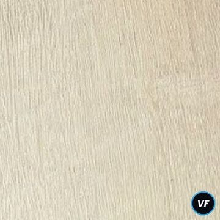
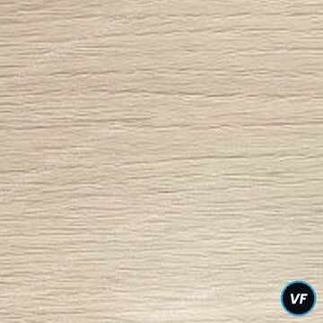
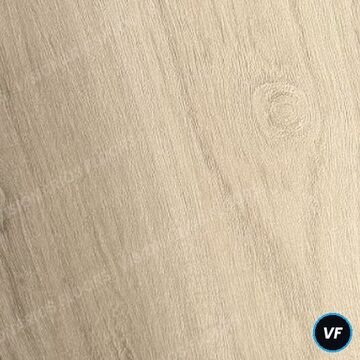
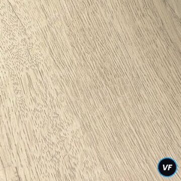
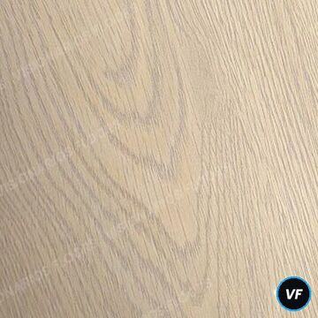
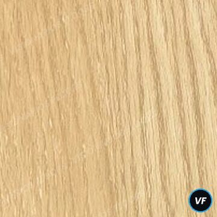
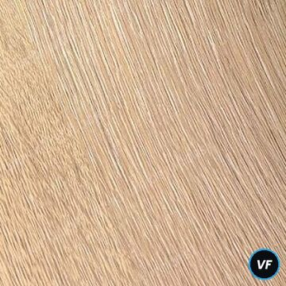
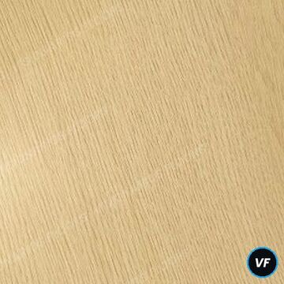
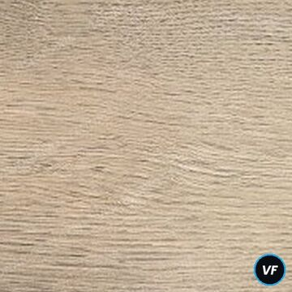
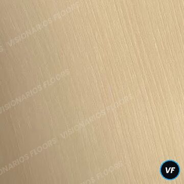
El clásico de Florida: tonos madera naturales y cálidos, fáciles de combinar.
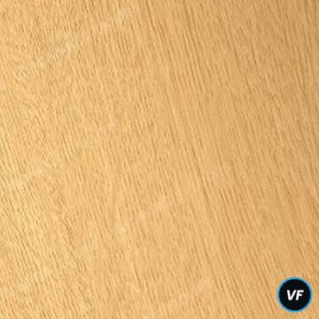
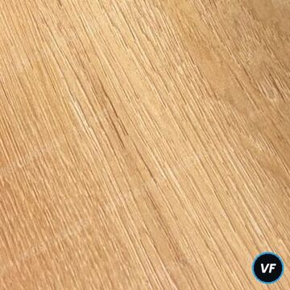
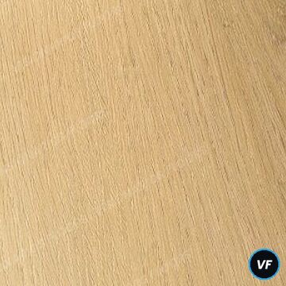
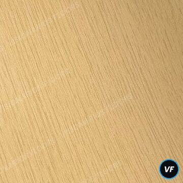
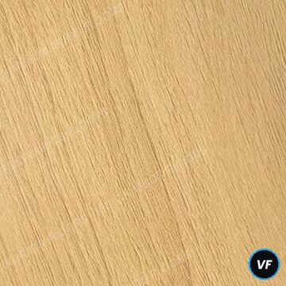
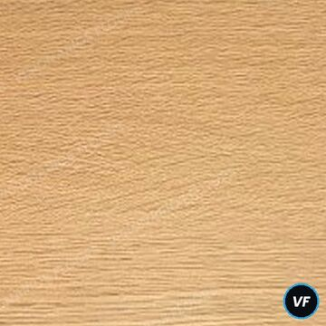
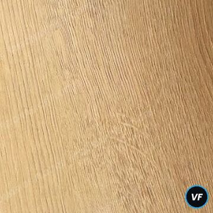
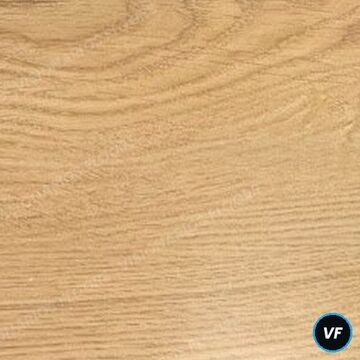
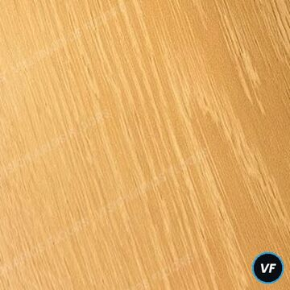
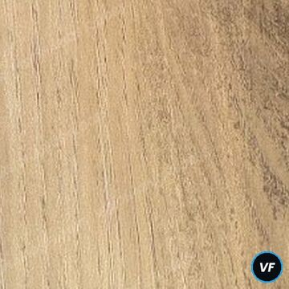
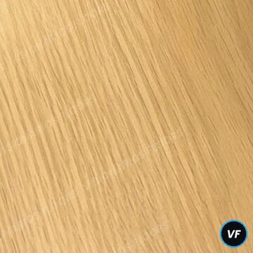
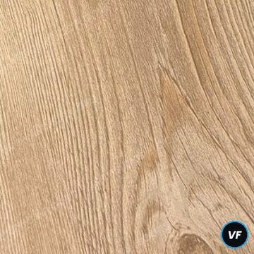
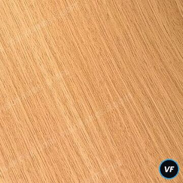
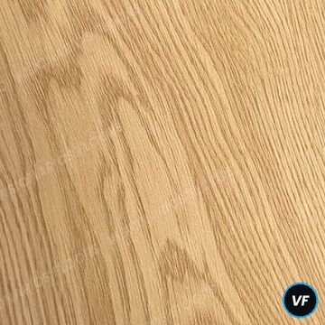
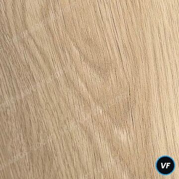
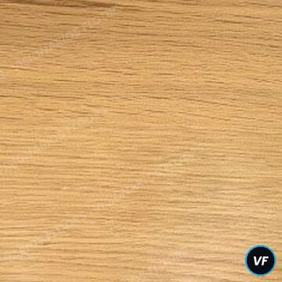
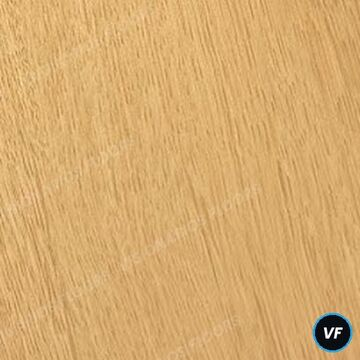
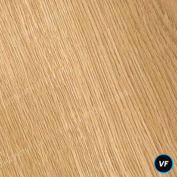
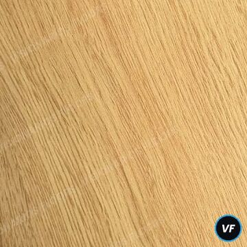
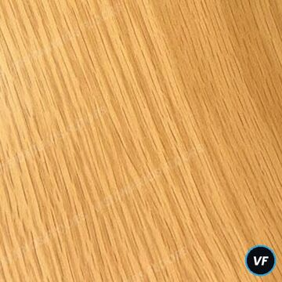
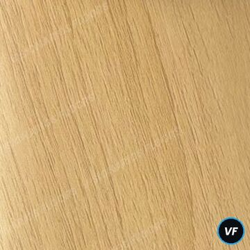
Mezcla de gris y beige. Moderno, neutro y muy pedido en remodelaciones.
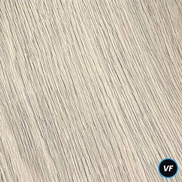
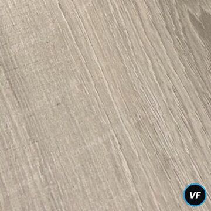
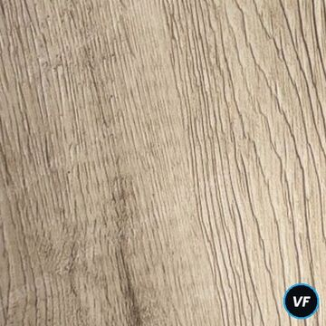
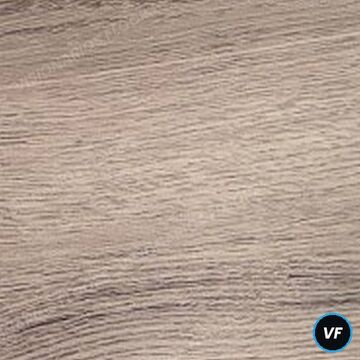
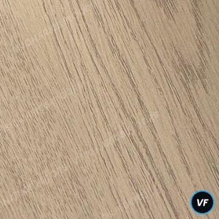
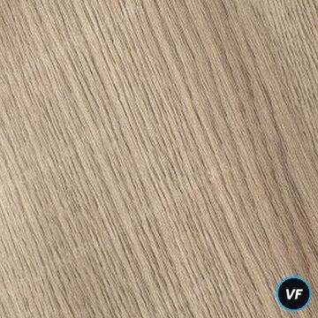
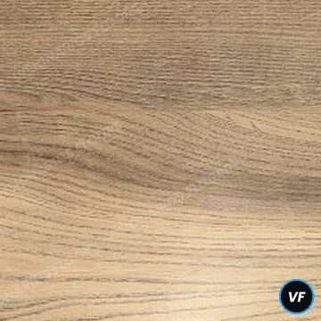
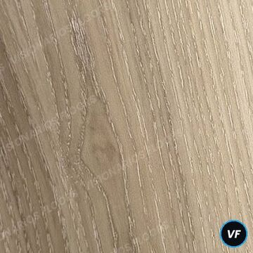
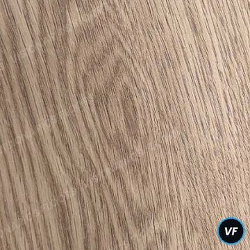
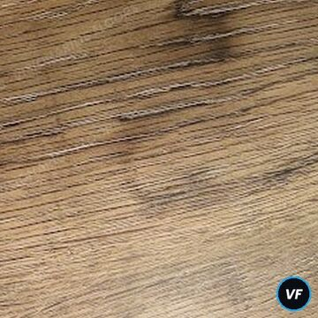
Desde el gris perla al gris humo. Ideal para estilos contemporáneos.
Robles miel con veta marcada. Calidez y luz para casas y rentas.
Maderas medias y oscuras con carácter rústico.
Tonos rojizos intensos para ambientes clásicos.
Look de piedra, mármol y cemento alisado. Baños, cocinas y comercios.
Anotá el código del color que te gusta.
Visita y medición sin costo en nuestra zona.
Precio claro por ft²: solo material o con instalación.
Equipo propio, trabajo limpio y prolijo.